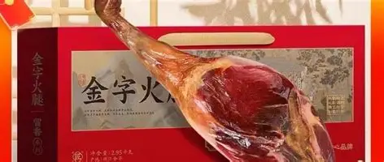
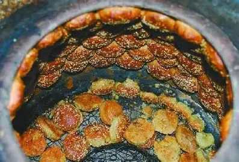
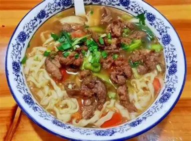

金华火腿
中国三大名腿之一，皮薄肉厚、香气浓郁，是金华最响亮的名片。
百年名产金华是座小城，却有无数美食让在异乡的游子魂牵梦绕。

中国三大名腿之一，皮薄肉厚、香气浓郁，是金华最响亮的名片。
百年名产
层层酥皮包裹干菜与肥膘，香酥可口，是传承千年的传统点心。
江南点心一口下去，是梅干菜的咸香混合着肉香，多汁又美味。
街头小吃
汤头浓鲜、面条筋道，是一碗让游子难忘的味道。
一碗乡愁自然风光与人文景观交相辉映，金华处处皆风景。
被誉为“天下第一洞”的溶洞奇观，洞中有洞、洞下有洞，夏日清凉宜人，是金华最负盛名的避暑胜地。
溶洞奇观千年古村落，按九宫八卦布局，被称为江南文化的活化石。
古村人文中国最大的影视拍摄基地之一，穿越古今的“东方好莱坞”。
影视之都世界最大的小商品集散中心，连接全球的“小商品之都”。
世界超市八咏楼、侍王府散落其间，漫步古街便能触摸千年婺州文脉。
城市记忆金华自古英才辈出，孕育了无数文人墨客与能工巧匠。